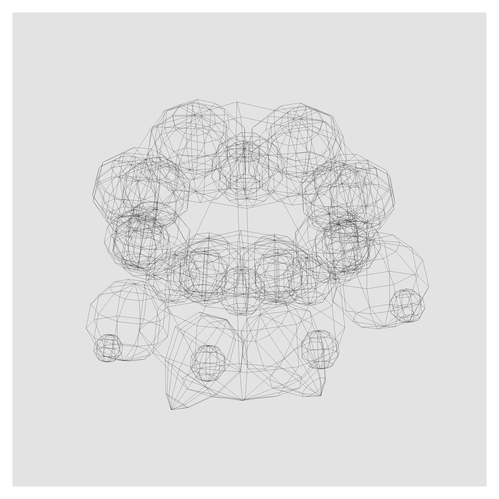

index/output/audio/osa/monologues
Monologues is a short compilation of tracks made over the course of 2019. You can download Monologues here.
2019.11 monologues tracklisting
1. Auburn 02:17
2. Palindrome 00:35
3. Sayonara 02:57
4. International 01:16
2019.06 monologues cover (5 min claydol)

about | contact | source